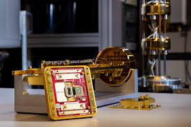

Microcomputers
These computers are the most compact. Despite their size, their performance is still able to meet user-standards. Personal computers such as desktops, laptops and cellphones are some examples of Micro Computers.
Minicomputers
These computers are built for more computational power and are often used in departments and business enterprises for their respective purposes.
Mainframe Computers
These computers are built to handle significant amounts of users, offering more computational power than Mini Computers. These types of computers are built for commercial use. Web/Internet servers are some examples of mainframes.
Supercomputers


These computers offer significantly increased performance than mainframes, capable of processing billions of instructions per second and are therefore one of the most powerful types of computers in the world. These computers are often used in important fields such as research and weather forecasting. Frontier and El Capitan are two of the most notable and powerful Super Computers in the world.
Quantum Computers
Currently the most powerful, cutting edge computers in the world. These computers are designed solely for research due to the sheer amount of instructions that it can process and the overall performance of such computers. What makes this possible is that quantum computers make use of qubits (short for quantum bits). Unlike classical bits which are used by conventional modern computers, qubits exhibit a special property known as superposition. In the case of qubits, it allows it to be both 0 and 1 at the same time, unlike transistors which can only either be 0 or 1. Majorana 1 (Fun Fact: Majorana 1 makes use of a brand new state of matter called Topological Superconductor, making it the most powerful Quantum Computer in the world) and Sycamore are notable examples of quantum computing chips. To minimize error, quantum computers operate at temperatures near Absolute 0 (Near -273.15 degrees Celsius) and it is achieved through Dilution Refrigeration.